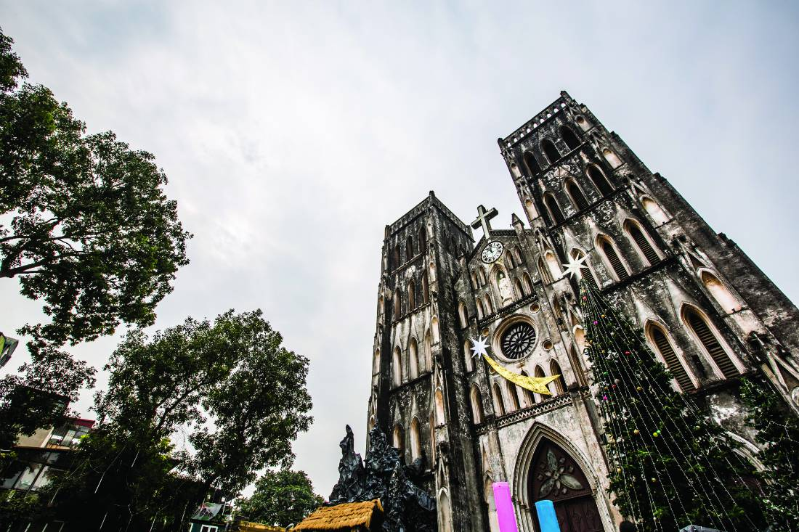
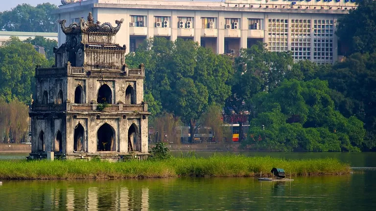
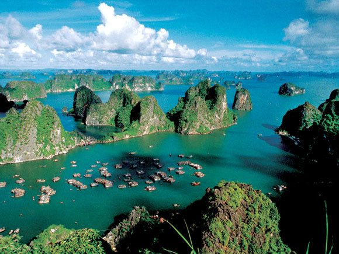

관심있는 분야를 선택해 주세요
호엔끼엠 호수에서 도보로 10분 거리에 있는 성 요셉 성당은 하노이에서 가장 오래된 성당으로 파리 노트르담 성당을 본따서 만들어졌다.
하노이 중심에 펼쳐진 호안끼엠 호수는 도시의 상징이자 시민들의 휴식 공간으로 사랑받는 곳이다. 시내에 크고 작은 호수가 많아 '호수의 도시'로 불리는 하노이에서도 가장 대표적인 호수다. 남북으로 길게 이어진 호수 주위로 싱그러운 녹음이 어우러져 더위를 피하기에 좋다.
평화의 바다, 위로의 섬. 베트남을 꿈꿀 때면 하롱베이의 비경이 가슴에 피어오른다. 베트남의 추억과 감동을 하롱베이처럼 단번에 표현해 주는 곳도 없을 것이기 때문이다. 바다 위에 떠 있는 3천여 개의 섬들이 만들어 낸 찬란한 아름다움은 온 인류의 가슴속에 오랫동안 살아 숨쉬게 될 것이다.
